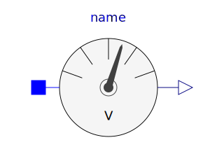
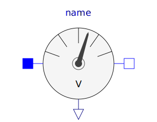
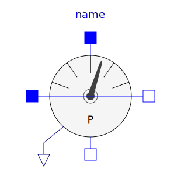

This package contains potential, voltage, and current sensors. The sensors can be used to convert voltages or currents into real signal values o be connected to components of the Blocks package. The sensors are designed in such a way that they do not influence the electrical behavior.
| Name | Description |
|---|---|
|  PotentialSensor | Sensor to measure the potential |
|  VoltageSensor | Sensor to measure the voltage between two pins |
| Sensor to measure the current in a branch | |
|  PowerSensor | Sensor to measure the power |